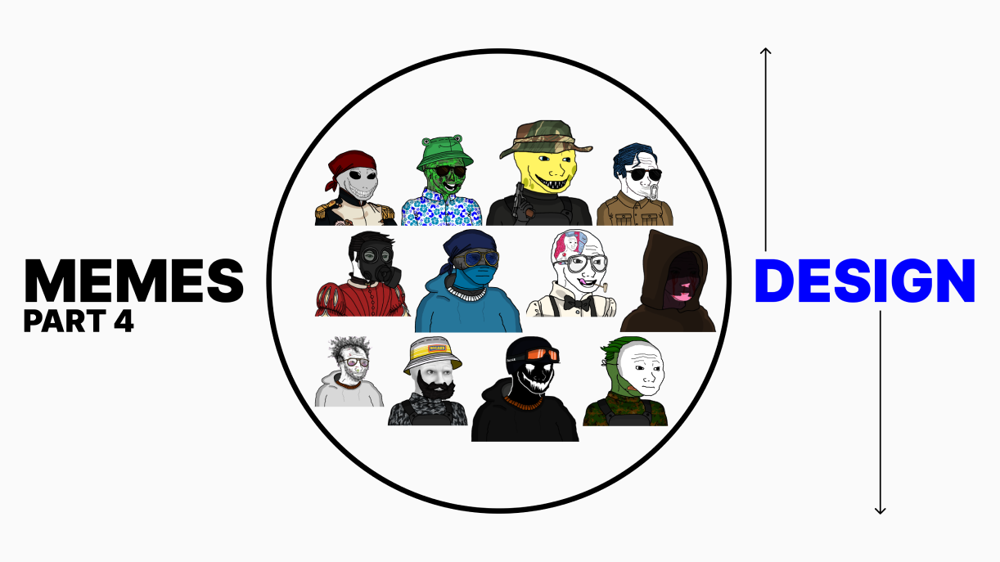
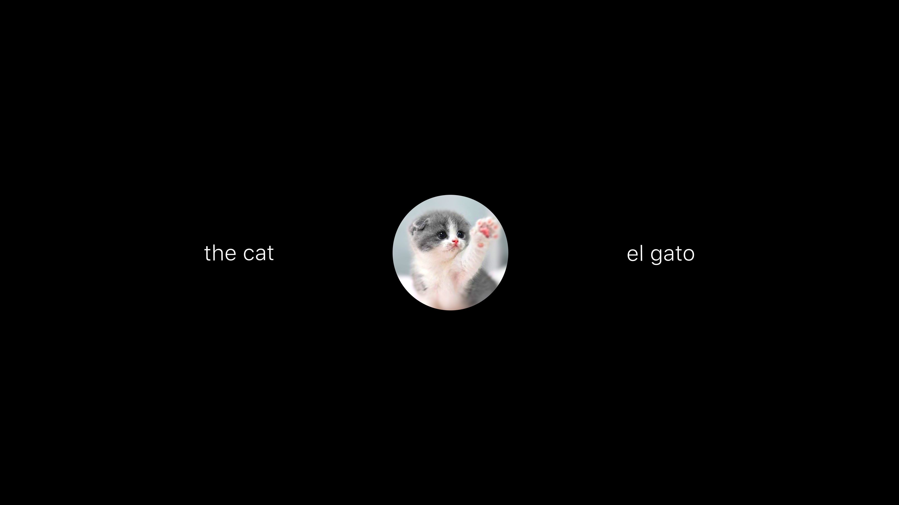
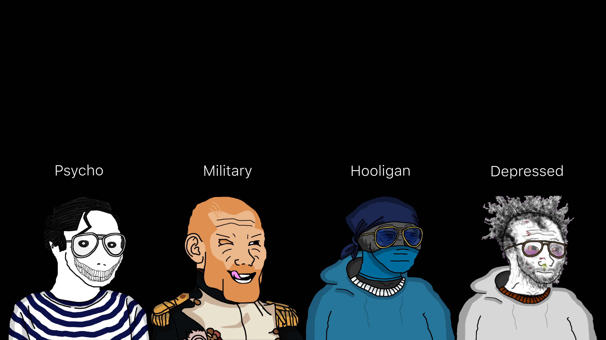
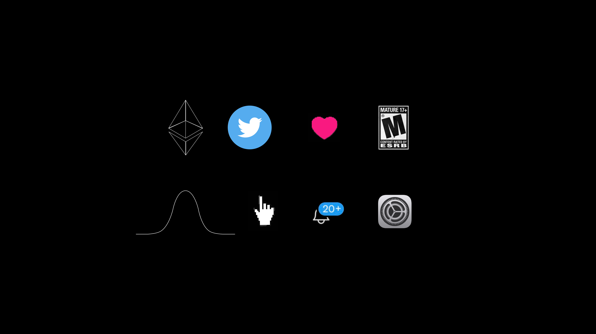

Diving into the various details related to memetic design
Catch up with us here:
A Non-Technical & Highly Speculative Look at Memes: Part 1
A Non-Technical & Highly Speculative Look at Memes: Part 2
A Non-Technical & Highly Speculative Look at Memes: Part 3
To recap:
- The term meme originates from Richard Dawkins’ The Selfish Gene
- It’s a concept that points at the dynamic of sharing information or data from one mind to another
- Phrases like ‘creatives are the new athletes’ are memes just like ‘three spidermen pointing at each other’ image
Meme Design
Assuming you understand the significance of intentionality when constructing and sharing them, it is now time to dive into thinking about their various design mechanics.
Most people will picture three different things in the above example. The end goal of the speaker is to get you to think about a cat. How they go about manifesting that image, and how close they get to their desired result, depends on design.
For this series, it is crucial to work under the framework that meme is just language or communication. It is a way of speaking to another person. But there is much more creative opportunity when you begin designing.
The digital realm presents communication dynamics that thrive on this understanding, and punish those that don’t get it.
Word-language
Whether it’s English, Spanish, French, German, Chinese, Japanese, Arabic, Latin, it’s all just words designed for us to communicate. You have something in your head and you need to get it into my head with as much accuracy as humanly possible. Errors can lead to conflict. Mistakes can lead to divergence.
The articulate individual is revered in most societies. The person who can express what they think is naturally more attractive. We are always trying to understand, and word-language is our main tool.
Think of the limits to word-language though:
- geography specific
- dialect specific
- culture specific
- society-demographic specific
If you speak French you can only really communicate at your max ability with other people who speak French. If you are from England, and you use your slang to ask for a cigarette in the States, you’ll get canceled.
If you become bi-lingual then you have nearly doubled your reach (though usually rate limited in the second language). If you acquaint yourself with other slang, you will increase your abilities as well, running into your own host of challenges to effectively use them face to face.
The word-language system is just that, a system. Memes are the over arching system. Everyone understands a picture of a cat. Not everyone understands what a tabby is.
Aesthetics
“Never judge a book by its cover.” We all know that isn’t feasible. Aesthetics are a language. They communicate just like word-language.
If you saw someone dressed in all black, with a hood up, and big headphones on they are telling you ‘leave me alone’. If you saw someone in a well tailored suit, smiling, and making eye contact with you, then you’d likely say hello to them.
Aesthetics are a more primal form of communication. For this reason, they get closer to what we are trying to unpack with meme design.
Symbols
Cavemen drew on the walls. The Egyptians etched into the pyramids. One could argue symbols are the hybrid of word-language and aesthetics. Take a look at Visualize Value by Jack Butcher and see how easy it is for you to understand the information.
There is something deep inside our minds that recognize symbols near instantaneously. Their relationship to memes exists in the digital economy and creative landscape most abundantly.
When you see the Ethereum logo your mind wanders to a host of ideas, judgments, and opinions. When you see a heart now, compared to 30 years ago, you think of entirely different things probably. The entertainment rating system, an upwards trending graph with stock tickers next to it; even a mouse cursor means something to you immediately upon recognition.
Next phase
The goal now is to blend these three pillars of communication. Meme design is just that. You want to take the things inside of your mind and uniquely represent them with word-language, aesthetics, and symbols to maximize your success at data transfer.
This is the science of memes.